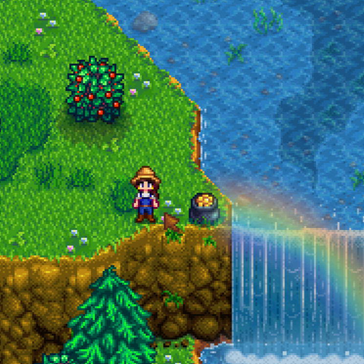

<table width="100%" style="background-color: #E6F2F7; border-radius: 10px; border-collapse: separate; border-spacing: 15px; padding: 15px;">
  <tr>
    <td align="center" valign="top" width="30%" style="background-color: #FFFFFF; border-radius: 10px; padding: 20px;">
      <br>
      
      <h2>유지연</h2>
      <p>학과: 컴퓨터공학과<br>학번: 202334019</p>
      <p>💻 University Student</p>
    </td>
    
    <td valign="top" width="70%" style="background-color: #FFFFFF; border-radius: 10px; padding: 20px;">
      <h3>🛠 기술 스택 (Tech Stacks)</h3>
      <p>
        
        
        
        
      </p>
      
      <hr style="border: 0.5px solid #D0E3EC;">
      
      <h3>🎓 졸업작품: Smart SeSS <a href="실제_논문_링크_주소" target="_blank" style="text-decoration: none; font-size: 15px;">[📄 논문 보기]</a></h3>
      <p><strong>시각장애인을 위한 AI 기반 실시간 스마트 보행 보조 안경 시스템</strong></p>
      
      <div style="background-color: #FFF5F7; border-left: 5px solid #FFB7C5; padding: 12px 18px; border-radius: 6px; margin: 15px 0; border-top: 1px solid #FFE3E8; border-right: 1px solid #FFE3E8; border-bottom: 1px solid #FFE3E8;">
        <span style="font-size: 15px; color: #4A3538;">📌 <strong>담당 역할:</strong> Weather API 연동 및 외부 데이터 처리 기능 개발</span>
      </div>

      <ul style="line-height: 1.6; padding-left: 20px;">
        <li>
          <strong>실시간 객체 인식 (YOLOv8)</strong>: 전방의 사람, 차량, 자전거 및 장애물을 동시 탐지하고 거리를 실시간 분석
        </li>
        <li>
          <strong>우선순위 기반 음성 피드백 (TTS)</strong>: 위험도가 높은 객체와 거리/방향 정보를 분석하여 사용자에게 구체적인 음성 안내 제공
        </li>
        <li>
          <strong>외부 데이터 연동 (OpenWeather API) [주요 기여]</strong>: 보행 환경에 꼭 필요한 실시간 날씨 데이터(온도, 습도, 날씨 상태 등)를 OpenWeather API와 연동하여 수신하고, 이를 시스템 내에서 안정적으로 결합·처리하는 핵심 기능 구현
        </li>
        <li>
          <strong>임베디드 및 웨어러블 구현</strong>: Raspberry Pi 하드웨어 최적화 및 3D 프린팅을 통한 안경 형태의 디바이스 제작
        </li>
      </ul>

      <hr style="border: 0.5px solid #D0E3EC;">

      <h3>📜 자격증</h3>
      <ul style="line-height: 1.6; padding-left: 20px;">
        <li>
          준비중
        </li>
      </ul>

      <hr style="border: 0.5px solid #D0E3EC;">

      <h3>🎓 교육 이수 사항 (Certificates)</h3>
      <ul style="line-height: 1.6; padding-left: 20px;">
        <li>
          <strong>누구나 쉽게 할 수 있는 소프트웨어 설계와 파이썬 (K-MOOC 이수)</strong>
          <br>주관: 경희대학교 | 운영기간: 2025.09.01 ~ 2025.12.19 (총 16주, 30시간 이수)
          <br>내용: 파이썬 기초 문법 및 컴퓨팅 사고력을 기반으로 한 소프트웨어 설계 핵심 프로세스 학습
        </li>
      </ul>

      <hr style="border: 0.5px solid #D0E3EC;">

      <h3>👥 동아리 활동 (Club Activities)</h3>
      <ul style="line-height: 1.6; padding-left: 20px;">
        <li>
          <strong>주주동아리 (융합 프로젝트)</strong>
          <br>타학과 학생으로 참여하여 화학공학과 학생들과 협업하며 주류 제조 프로젝트 진행, 제조 과정에서 발생하는 데이터들을 수치화하고 성분 분석 결과를 표 형태로 한눈에 시각화할 수 있는 <strong>빅데이터 처리 및 데이터 분석 프로그램 개발 중이다.</strong>
        </li>
        <br>
        <li>
          <strong>MANIA (문화·예술 서브컬처 동아리)</strong>
          <br>다양한 학과의 부원들과 교류하는 그림부 소속으로 활동, 애니메이션 콘텐츠 및 일러스트 창작 활동을 함께하며 소통 역량을 기르고 개인 취미를 창의적으로 발전시켰다.
        </li>
      </ul>
    </td>
  </tr>
</table>
